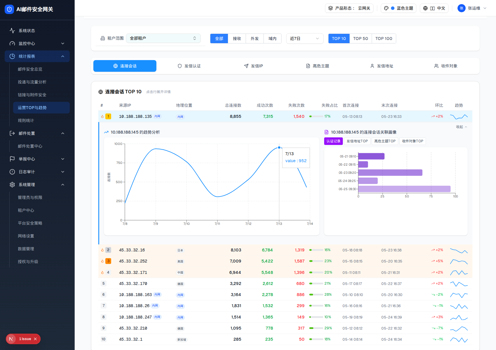

| 触发路径 | 层级0（连接会话）→ 点击 TOP 列表任一行 → 展开面板（左 60% 趋势 ｜ 右 40% 下钻） |
10.188.188.145 的趋势分析7/13
10.188.188.145 的连接会话关联画像 |
10.188.188.145 的趋势分析10.188.188.145 的连接会话关联画像 |

| 区域 | 规格 |
|---|---|
| 左 60%（D区） | 7 日趋势折线图，高 380px；Y 轴含义随维度动态（连接=连接数 / 认证=认证次数 / 发信IP=发信量 …）；空态：放大镜 + 「暂无数据」；提示文案「点击左侧列表中的对象，查看其时间趋势」（已修复损坏中文） |
| 右 40%（E区） | 子维度 Tab（4 个，默认第 1 个）+ 横向条形图（紫色按序渐隐），高 380px 可滚动，超长名称截断 |
| 连接会话的 4 个子维度 | 认证记录 · 发信地址TOP · 高危主题TOP · 收件对象TOP（子维度名在 demo 里全是乱码，已修复） |
| 收起 | 行内「收起」按钮 / 再次点击该行（250ms） |
| 比对项 | demo 实际 DOM | 提取的 HTML | 是否一致 |
|---|---|---|---|
| 展开行 | tr（跨列展开面板） | 同 | 一致 |
| 左侧趋势图 | 1 个 recharts SVG（7 个数据点） | 同 | 一致 |
| 右侧子维度 Tab | 4 个 + 「收起」 | 同 | 一致 |
| 下钻条形图 | 横向条形（紫色渐隐） | 同 | 一致 |
| 子维度默认 | 第 1 个（连接会话 → 认证记录） | 同 | 一致 |